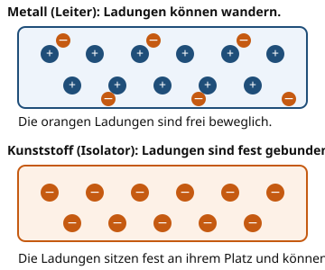

Leiter und Isolatoren
Warum ist das wichtig?
Ein Stromkabel hat innen eine Seele aus Kupfer und außen eine Ummantelung aus Kunststoff. Warum ist das so? Würde das Kupfer außen liegen, könntest du es berühren und einen Stromschlag bekommen. Der Kunststoff schützt dich, weil er den Strom nicht leitet. Welche Stoffe leiten und welche nicht?
Das steckt dahinter
Stoffe, in denen elektrische Ladungen wandern können, heißen Leiter. Dazu gehören fast alle Metalle, zum Beispiel Kupfer, Aluminium und Eisen. Stoffe, in denen die Ladungen fest an ihrem Platz sitzen, heißen Isolatoren. Beispiele sind Kunststoff, Glas, Gummi und trockene Luft.

Im Metall können sich die negativen Ladungen zwischen den Atomen bewegen. Im Kunststoff bleiben sie an ihrem Platz.
Quelle: eigene Zeichnung. Lizenz: CC-BY-4.0.| Stoff | Einordnung | Beispiel |
|---|---|---|
| Kupfer | Leiter | Das Innere eines Stromkabels |
| Aluminium | Leiter | Eine Getränkedose |
| Eisen | Leiter | Ein Nagel |
| Kunststoff | Isolator | Die Ummantelung eines Kabels |
| Glas | Isolator | Eine Fensterscheibe |
| Gummi | Isolator | Der Griff eines Schraubendrehers |
- Leiter
Ein Leiter ist ein Stoff, in dem sich elektrische Ladungen frei bewegen können, zum Beispiel ein Metall.
- Isolator
Ein Isolator ist ein Stoff, in dem elektrische Ladungen fest gebunden sind und nicht wandern können, zum Beispiel Kunststoff.
Ein Beispiel
Das Stromkabel
Im Inneren eines Stromkabels liegt Kupfer. Es ist ein Leiter und führt den Strom von der Steckdose zum Gerät. Außen liegt Kunststoff. Er ist ein Isolator und hält den Strom davon ab, durch deine Hand zu fließen. Deshalb darfst du ein Kabel mit heiler Ummantelung anfassen.
Ist die Ummantelung beschädigt und das Kupfer liegt frei, ist der Schutz weg. Ein solches Kabel benutzt du nicht mehr.
Übung
Übung
Lösung
Richtige Antwort: Kupfer – Leiter, weil die Ladungen frei beweglich sind; Kunststoff – Isolator, weil die Ladungen fest gebunden sind; Eisen – Leiter, weil es ein Metall ist; Glas – Isolator, weil die Ladungen nicht wandern können; Gummi – Isolator, weil er die Ladungen festhält
Metalle wie Kupfer und Eisen leiten Strom. Kunststoff, Glas und Gummi sind Isolatoren.
Mehr dazu:
Übung
Lösung
Weil sich die Ladungen im Metall frei bewegen können. richtige Antwort
Im Metall sind die negativen Ladungen nicht fest an einen Platz gebunden. Sie können sich durch das Metall bewegen und den Strom transportieren.
Weil Metall magnetisch ist.
Magnetismus und elektrische Leitfähigkeit sind zwei verschiedene Dinge. Auch nichtmagnetische Metalle wie Kupfer leiten Strom.
Weil Metall keine Atome hat.
Auch Metall besteht aus Atomen. Entscheidend ist, dass sich einige Ladungen zwischen ihnen frei bewegen können.
Leitfähigkeit bedeutet, dass Ladungen wandern können. Das ist bei Metallen der Fall, bei Kunststoff und Glas nicht.
Mehr dazu:
Übung
Lösung
Der Kunststoffgriff einer Zange richtige Antwort
Kunststoff ist ein Isolator. Der Griff hält den Strom von deiner Hand fern.
Die Gummiisolierung eines Kabels richtige Antwort
Gummi ist ein Isolator und umgibt den leitenden Draht.
Ein Kupfernagel
Kupfer ist ein Leiter. Ein Kupfernagel schützt nicht vor Strom.
Ein Glasstab richtige Antwort
Glas ist ein Isolator. Ein Glasstab leitet den Strom nicht.
Isolatoren sind Kunststoff, Gummi und Glas. Metalle wie Kupfer leiten Strom und schützen nicht.
Mehr dazu:
Übung
Drei Beispielaufgaben, jede mit ihrer Lösung:
Aufgabe Nr. 1
Welches Alltagsbeispiel passt zum Stoff Gummi?
Tipp
Überlege, wo genau dieser Stoff im Alltag vorkommt.
Lösung
- Gummi kommt vor als: Der Griff eines Schraubendrehers.
Richtige Antwort: Der Griff eines Schraubendrehers.
Aufgabe Nr. 2
Welches Alltagsbeispiel passt zum Stoff Eisen?
Tipp
Überlege, wo genau dieser Stoff im Alltag vorkommt.
Lösung
- Eisen kommt vor als: Ein Nagel.
Richtige Antwort: Ein Nagel.
Aufgabe Nr. 3
Welches Alltagsbeispiel passt zum Stoff Gummi?
Tipp
Überlege, wo genau dieser Stoff im Alltag vorkommt.
Lösung
- Gummi kommt vor als: Der Griff eines Schraubendrehers.
Richtige Antwort: Der Griff eines Schraubendrehers.